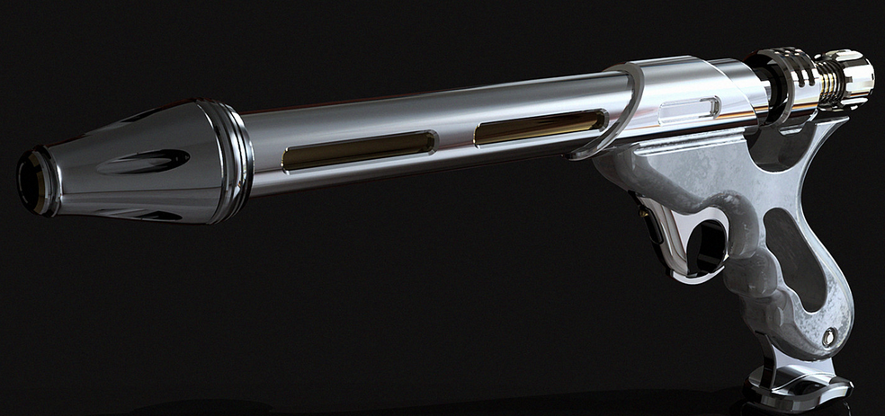
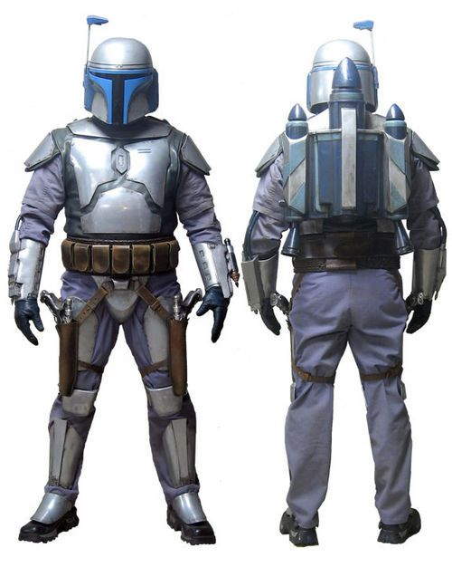
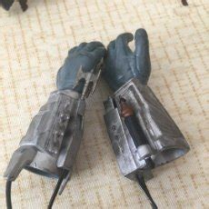

Jango Fett

Historia
Jango Fett nació en el planeta Concord Down en el espacio galactico controlado por Mandalor,era Hijo de una familia de granjeros
la cual fue afectada por Guerra Civil Mandaloriana,Jango quedó huerfano a sus 11 años por dicha guerra pero fue adoptado por el Mandaloriano Jester Merel
el cual fue su mentor hasta su muerte en la batalla de Korda Six,despues de la muerte de quien fue su segundo padre,Jango Fett
comando a un grupo de Mandalorianos a Galidraan donde fueron traicionado por Tor Vizsla,Jango y su grupo se tuvieron que
enfrentar a un ejercito de jedi donde Jango demostro su superioridad venciendo a 6 Jedi con sus manos y ser el unico superviviente
antes de ser capturado por el Padawan Dooku,despues de la Guerra,Jango,se convirtio en el mejor Cazarrecompensas de la galaxia
a tal punto que se convirtio en el donante para el gran Ejercito Clon,como recompensa,Jango,pidió un clon sin alteraciones,un clon
puro,una replica exacta de el,el cual lo nombraria como Boba Fett,Jango moriria en la Batalla de Geonosis decapitado por el Jedi Mace Windu
Dejando de herencia a Boba Fett su armadura Mandaloriana,set de armas,nave y un diario con instrucciones de que hacer en caso de que Jango muera.
Mejor Azaña
- Derrotar a 6 Jedi en la Batalla de Galidraan
- Asesinato de Tor Vizsla
- Desmantelar el Bando Gora derrotando a Komari Vosa
- Ser el donante de ADN para Formar el Ejercito Clon
Arsenal
| Equipo |
Nombre |
Descripcion |
|  |
Pistolas Blaster Westar-34 |
Muy practcas para mantener una alta cadencia y mantener a raya a los ususarios de espada laser,facil de manejar en el JetPack |
|  |
Armadura Mandaloriana de Beskar |
Armadura que brinda proteccion a su usuario contra el fuego de blasters ligeros |
 |
JetPacks JT-12 y Z-6 |
- JT-12:Mas ligero solo pensado para la movilizacion
- Z-6:Mas pesado,tambien para la movilizacion del usuario pero con un cohete que se controla desde la terminal de su muñequera
|
|  |
Muñequeras |
Brazaletes con todo tipo de arsenal
- Lanzallamas
- Garras retractiles en los antebrazos
- Dardos venenosos
- Dardos silvadores
- Gancho
- terminal para controlar mas aparejos
|
Nave
Firespray-31 "Slave 1"

Nave Patrullera de ataque la cual era un prototipo policial de la prision Oovo 4,Jango tuvo que robarla para poder escapar de la luna ya que su nave heredada fue destruida,
es la unica de su clase ya que Jango destruyo la prision donde se guardavan los otros Prototipos
Boba Fett

Historia
Antes de la Caida a la Fosa
Boba Fett,Creado en ciudad Tipoca en el planeta
como parte del pago ha Jango Fett
Boba Fett es una copia pura de Jango Fett,despues de presenciar la muerte de su padre en Geonosis,Boba Fett
se unio a Varios Cazarrecompensas para seguir el camino de su padre,Forjando su propio sindicato criminal llamado "la garra de creig",forjando amistad
con varios cazarrecompensas,despues de su Joven carrera Criminal,la cual termino en una prision en el planeta "Coruscant" Boba Fett empezo a trabajar solo
fiandose de muy poca gente,cerrando su vinculo a 4 personas,Bossk,Dengar,Din Jrin y Fenec Shand (estos dos ultimos fueron despues de salir de la fosa del Sarlac).
Boba Fett empezo a trabajar para Jaba El Hutt Lider de el grupo criminal mas grande del borde exterior,eso le dava a Boba Fett la seguridad de no
encontrarse ni con imperiales ni Reveldes,ya que tenia un Historial un poco peculiar,Boba fett se combirtio en el alfil de Jabba el Hutt,ya que era el hombre mas temido
de la galaxia,Poco despues de la destruccion de la Primera Estrella de la Muerte,Jabba y Vader empezaron a buscar a Han Solo Jabba porque le devia muchos creditos y Vader
porque queria provar la criogenizacion antes de poner a Luke SkyWalker en ella,Despues de capturar a Han Solo en la ciudad de las nubes,Darth Vader le entregaria
Han Solo a Boba Fett,Boba Fett le entrgaria a Jaba su presa. así terminando su ultimo trabajo como cazarrecompensas.
Despues de unos sucesos en los cuales Han Solo se liberaria y por un golpe de suerte,Boba Fett caeria en la Fosa del Sarlac
DEspues de la Caida a la Fosa
Despues de pasar 5 años desntro de la fosa del Sarlac,Boba Fett despertaria de su estado de inconsciencia que el sarlac mantenia,Boba fett con su instinto de supervivencia